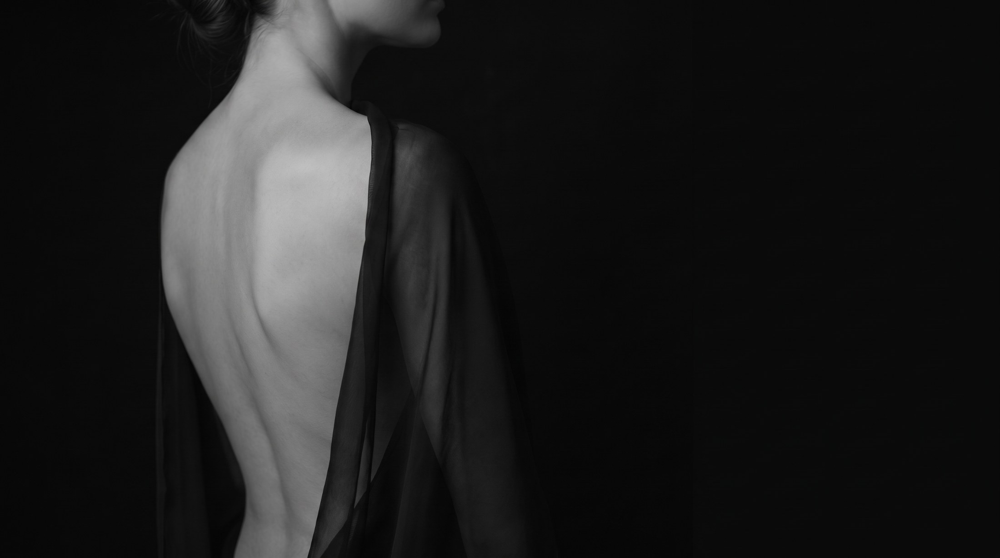

01блефаропластика
хочу более
открытый взгляд
хочу изменить
грудь
02 · маммопластика
хочу вернуть
форму живота
после родов
03 · абдоминопластика
04 · хочу
липосакция
скорректировать
контуры тела
05 · липоскульптурирование
хочу подчеркнуть
форму тела
06 · подтяжка лица
хочу омолодить лицо,
но остаться собой
ваш запрос
Что вы хотите изменить?